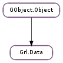

| Subclasses: | Grl.Media |
|---|
| static | new() |
| add_binary(key, buf, size) | |
| add_boxed(key, boxed) | |
| add_float(key, floatvalue) | |
| add_int(key, intvalue) | |
| add_related_keys(relkeys) | |
| add_string(key, strvalue) | |
| dup() | |
| get(key) | |
| get_binary(key) | |
| get_boolean(key) | |
| get_boxed(key) | |
| get_float(key) | |
| get_int(key) | |
| get_keys() | |
| get_related_keys(key, index) | |
| get_single_values_for_key(key) | |
| get_single_values_for_key_string(key) | |
| get_string(key) | |
| has_key(key) | |
| length(key) | |
| remove(key) | |
| remove_nth(key, index) | |
| set(key, value) | |
| set_binary(key, buf, size) | |
| set_boolean(key, boolvalue) | |
| set_boxed(key, boxed) | |
| set_float(key, floatvalue) | |
| set_int(key, intvalue) | |
| set_related_keys(relkeys, index) | |
| set_string(key, strvalue) |
None
None
| Name | Type | Access |
|---|---|---|
| parent | GObject.Object | r |
Bases: GObject.Object
| Parameters: |
|---|
Appends a new binary value for key in data.
| Parameters: |
|
|---|
Appends a new boxed value for key in data.
| Parameters: |
|
|---|
Appends a new float value for key in data.
| Parameters: |
|---|
Appends a new int value for key in data.
| Parameters: | relkeys (Grl.RelatedKeys) – a set of related properties with their values |
|---|
Adds a new set of values into data.
All keys in prop must be related among them.
data will take the ownership of relkeys, so do not modify it.
| Parameters: |
|---|
Appends a new string value for key in data.
| Returns: | a new Grl.Data. Free it with GObject.Object.unref. |
|---|---|
| Return type: | Grl.Data |
Makes a deep copy of data and all its contents.
| Parameters: | key (int) – key to look up. |
|---|---|
| Returns: | a GObject.Value. This value should not be modified nor freed by user. |
| Return type: | GObject.Value |
Get the first value from data associated with key.
| Parameters: | key (int) – key to use |
|---|---|
| Returns: | buffer location associated with the key, or None in other case. If successful size will be set the to the buffer size. |
| Return type: | int, size: int |
Returns the first binary value associated with key from data. If key has no first value, or value is not a float, or key is not in data, then None is returned.
| Parameters: | key (int) – |
|---|---|
| Returns: | the first boolean value associated with key from data. If key has no first value, or value is not a bool, or key is not in the data, then False is returned |
| Return type: | bool |
| Parameters: | key (int) – key to use |
|---|---|
| Returns: | the boxed instance associated with key if possible, or None in other cases. The caller should not change nor free the value. |
| Return type: | int |
Returns the first boxed value associated with key from data. If key has no first value, that value is not of a boxed type, or key is not in data, then None is returned.
| Parameters: | key (int) – key to use |
|---|---|
| Returns: | float value associated with key, or 0 in other case. |
| Return type: | float |
Returns the first float value associated with key from data. If key has no first value, or value is not a float, or key is not in data, then 0 is returned.
| Parameters: | key (int) – key to use |
|---|---|
| Returns: | int value associated with key, or 0 in other case. |
| Return type: | int |
Returns the first int value associated with key from data. If key has no first value, or value is not a int, or key is not in data, then 0 is returned.
| Returns: | an array with the keys. The content of the list should not be modified or freed. Use GLib.List.free () when done using the list. |
|---|---|
| Return type: | [int] |
Returns a list with keys contained in data.
| Parameters: | |
|---|---|
| Returns: | a Grl.RelatedKeys. Do not free it. |
| Return type: |
Returns a set containing the values for key and related keys at position index from data.
If user changes any of the values in the related keys, the changes will become permanent.
| Parameters: | key (int) – a metadata key |
|---|---|
| Returns: | a GLib.List with values. Do not change or free the values. Free the list with GLib.List.free. |
| Return type: | [GObject.Value] |
Returns all non-None values for key from data. This ignores related keys.
| Parameters: | key (int) – a metadata key |
|---|---|
| Returns: | a GLib.List with values. Do not change or free the strings. Free the list with GLib.List.free. |
| Return type: | [str] |
Returns all non-None values for key from data. key must have been registered as a string-type key. This ignores related keys.
| Parameters: | key (int) – key to use |
|---|---|
| Returns: | string associated with key, or None in other case. Caller should not change nor free the value. |
| Return type: | str |
Returns the first string value associated with key from data. If key has no first value, or value is not string, or key is not in data, then None is returned.
| Parameters: | key (int) – key to search |
|---|---|
| Returns: | True if key is in data, False in other case. |
| Return type: | bool |
Checks if key is in data.
| Parameters: | key (int) – a metadata key |
|---|---|
| Returns: | number of values |
| Return type: | int |
Returns how many values key or related keys have in data: if key has no value, but a related key has, then it is counted as positive.
As example, let’s think in three related keys, K1, K2 and K3, and then thinks we have added several values for those keys, as:
(V10, V20, V30),, (V11, None, V31), (V12, None, V32)
Therefore, when invoking Grl.Data.length (data, K2) it will return 3: considering K2 and the related keys (K1 and K3), there are 3 values.
| Parameters: | key (int) – key to remove |
|---|
Removes the first value for key from data. If there are other keys related to key their values will also be removed from data.
| Parameters: |
|---|
Removes the value at position index for key from data. If there are other keys related to key, their values at position index will also be removed from data.
| Parameters: |
|
|---|
Sets the first value associated with key in data. If key already has a value old value is freed and the new one is set.
Also, checks that value is compliant with key specification, modifying it accordingly. For instance, if key requires a number between 0 and 10, but value is outside this range, it will be adapted accordingly.
| Parameters: |
|---|
Sets the first binary value associated with key in data. If key already has a first value old value is replaced by the new one.
| Parameters: |
|---|
Sets the first boolean value associated with key in data. If key already has a first value, old value is replaced by the new one.
| Parameters: |
|
|---|
Sets the first boxed value associated with key in data. If key already has a value, the old value is freed and the new one is set.
| Parameters: |
|
|---|
Sets the first float value associated with key in data. If key already has a first value old value is replaced by the new one.
| Parameters: |
|---|
Sets the first int value associated with key in data. If key already has a first value old value is replaced by the new one.
| Parameters: |
|
|---|
Updates the values at position index in data with values in relkeys.
data will take ownership of relkeys, so do not free it after invoking this function.